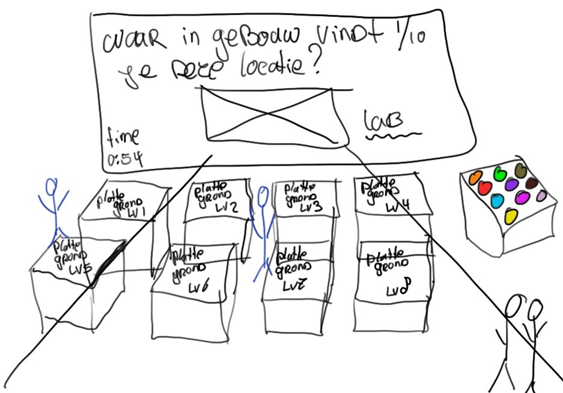

Portfolio HCI Marissa Hoekmeijer
Playful interaction assignment
Voor het vak HCI Technologies volgen we elke week een topic met betrekking op technologie. Deze week is Playfull interaction aan de beurt. Wat houdt play nu precies in?
- Het is een range uit intrinsieke motiverende activiteiten gedaan voor recreatie plezier en genot.
- Het is fijn, maar niet altijd fun.
- Het is belangrijk voor onze gezondheid, ondersteund ons begrip van onze omgeving en onszelf, faciliteert sociale verbintenis en is voordelig voor iedereen.
- Iedereen kan het spelen en het gebeurt in alle culturen en is vaak ouder dan de cultuur zelf.
Uiteindelijk houdt playful interaction in dat de gebruiker op spelende wijze interacteert met de content van een object. De gebruiker interacteert dus niet alleen met de interface zelf, maar gebruikt een object buiten beschrijvingen om.
Nieuwe playfull concept
Voor de Topic Playfull interaction is het de bedoeling dat wij binnen De Haagse Hogeschool een concept bedenken dat sociaal playful is en dat positief gedrag aanmoedigt. Positief gedrag kan op vele verschillende manieren geïnterpreteerd worden. Ik heb het geïnterpreteerd op de manier van het vinden van de juiste weg in het gebouw, samen met een klasgenoot of vriend/vriendin. Op een spelende manier samen met je bondgenoot de juiste plekken in de school vinden, zorgt soms voor stress, want je wilt de beste tijd score neerzetten tegen over andere paren, maar ook voor plezier, wanneer je alle juiste plekken hebt gevonden.
Uitleg concept
In de hogeschool staan nu al vaak grote pilaren met aanwijzingen waar je verschillende afdelingen in de school kan vinden. Elke faculteit/opleiding heeft zijn eigen kleur. Mijn concept werkt als volgt:
- Er is één groot scherm waar de vraag op aangegeven staat, tijd en welke vraag. Deze vraag gaat altijd over waar een locatie in school te vinden is, met een afbeelding.
- Er zijn 8 tafels, ieder met een plattegrond van één verdieping ( er zijn namelijk 8 verdiepingen in het hoofd gebouw).
- Er is één tafel met de kleur codes van de faculteiten. Hierin is nog een scherm aanwezig om het spel te starten en een team naam in te vullen.
Wanneer de team naam is ingevuld en er op start is gedrukt gaat de tijd lopen. De vraag wordt gesteld met een foto van de locatie. Eén teamlid gaat opzoek naar de locatie op de plattegronden en het andere teamlid denkt na over welke faculteit deze locatie bij hoort. Wanneer ze denken dat ze het weten raken ze de loactie en kleur, beiden tegelijk aan. Wanneer het antwoord goed is, kleurt de plattegrond groen en hoor je een pling geluidje. De tijd stopt even voor 30 seconden om de volgende vraag te lezen en dan moet de volgende vraag beantwoord worden. Wanneer fout kleurt de plattegrond rood en hoor je een zoemer. Op het beeldscherm is te zien, welk antwoord fout is, de faculteit of de locatie of misschien beiden. Wanneer alle 10 de vragen zijn beantwoordt stopt het spel en wordt de score op de ranglijst gezet. Dit hele concept kan opgezet worden in de grote ruimte van het atrium!
Interactie tussen spelers
Deze vindt plaats door met elkaar te communiceren en te overleggen, waar deze locatie zich nu precies bevindt. Ze zouden natuurlijk ook kunnen overleggen met mensen die niet mee spelen. Daarnaast is het een spel van samenwerken, want de één moet de locatie aanraken en de ander moet de kleur aanraken. Hoe beter de communicatie en samenwerking, hoe sneller de tijd. Als zij namelijk boven aan het scoreboard eindigen veroorzaakt dat tevredenheid. Ondanks dat ze samenwerken, is dit concept wel competitief direct opgesteld, omdat ze de competitie aangaan met andere teams. Daarnaast is het een structured en closed-ended play, omdat er geen ruimte is voor hun eigen creativiteit, ze volgen de vragen op en geven hier antwoord op.
Interactie tussen spelers en systeem
In het begin melden de koppels zich aan via het scherm bij de objecten tafel. Hier kunnen ze hun team naam invullen en op start drukken. Daarna interacteren ze met het systeem door aanraking maar als zij bijvoorbeeld een hint nodig hebben door webcam. Want als ze beiden voor het scherm gaan staan en hun hand opsteken, ontvangen ze een hint. Met aanraking vullen ze het juiste antwoord in.
Hoe werkt het concept technisch?
Het systeem werkt mekt verschillende input en output systemen. De input waarmee het systeem te maken krijgt is touch en webcam. De gebruikers raken namelijk de panelen aan. Wanneer de gebruikers een hint nodig hebben doen ze hun hand in de lucht, dit vergt input van de webcam. Voor de output wordt er gebruik gemaakt van display en sound. Wanneer het antwoord namelijk goed is ontvangen de gebruikers doormiddel van display een groen scherm en doormiddel van sound een correct geluidje. Wanneer het antwoord fout is, zien de gebruikers doormiddel van display een rood scherm en welke antwoorden fout zijn en daarnaast een zoemer geluid